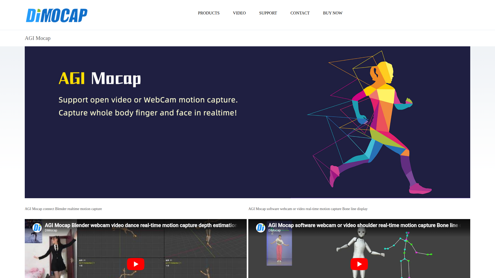

AI 影片轉動畫雲端服務
AGI Mocap 是一款雲端 AI 服務，能將上傳的影片自動提取骨架動畫並匯出為 FBX 格式。操作介面簡潔直覺，主打「上傳影片 → AI 處理 → 下載動畫」的極簡工作流程，適合快速將影片參考轉化為可用的 3D 動畫資料。

傳統影片轉動畫需要複雜軟體設置。AGI Mocap 提供簡單的雲端服務——上傳影片即可取得 3D 骨架動畫，無需安裝任何軟體。
⚠️ 傳統影片轉動畫
✅ AGI Mocap 方案
影片展示 AGI Mocap 的操作流程：從影片上傳、AI 雲端處理到最終 FBX 下載的完整過程。可觀察其介面設計的簡潔程度與處理結果的品質。
主要匯出格式，業界標準 3D 資料交換格式
所有 AI 運算在雲端執行，不佔用本地資源
較新的工具平台，持續迭代改善中
AGI Mocap 作為較新的工具，定價方案可能尚在調整中。建議直接造訪官網查看最新的方案與免費額度資訊。新興平台通常會提供較優惠的早期使用者方案，值得關注其定價策略的發展。
AGI Mocap 在 AI 動作生成工具 動作生產流程中定位為「低優先級的替代方案」。當主要工具（如 Marionette、QuickMagic）無法滿足需求或暫時不可用時，AGI Mocap 可作為備選的影片轉動畫方案。其簡潔的操作流程是主要優勢。
AGI Mocap 在流程中屬於「備選影片轉換工具」。其極簡的操作流程使其適合快速測試，但由於生態尚未成熟，建議僅作為輔助工具使用，不作為核心流程的單一依賴。
AGI Mocap 以極簡操作流程為特色，適合快速將影片轉為 FBX 動畫。作為新興工具，目前建議以觀察與測試為主，持續追蹤其品質改善與功能擴展的進度。